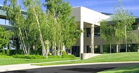

About Bio-Rad
Bio-Rad is a global leader in developing, manufacturing, and marketing a broad range of innovative products for the life science research and clinical diagnostic markets. With a focus on quality and customer service for 70 years, our products advance the discovery process and improve healthcare. Our customers include university and research institutions, hospitals, public health and commercial laboratories, biotechnology, pharmaceutical, as well as applied laboratories that include food safety and environmental quality.
Published